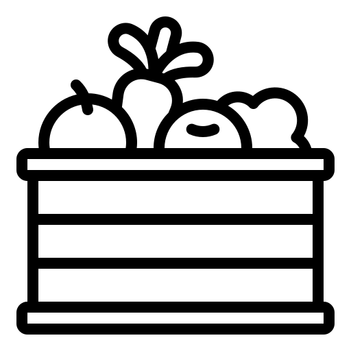
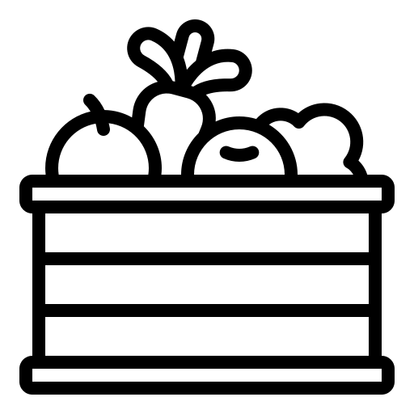

Feira Livre
Cestas Organicas

Fruta Imperfeita
Diminuição dos adubos químicos, fertilizantes e pesticidas; Reuso da água da chuva nos sistemas de irrigação; Fontes de energia limpa; Uso de técnicas que não poluam o ar, o solo e a água; Prática de agricultura orgânica; Não utilizar do desmatamento para ampliação das áreas agrícolas; Realizar o plantio direto para preservar a capacidade produtiva do solo;
Possuir uma equipe de gestão ambiental e territorial para alcançar o maior rendimento de produção com menor desgaste do solo; Respeitar as leis trabalhistas a que os trabalhadores do campo têm direito; Não utilizar mão-de-obra infantil e/ou não remunerada; Valorizar a agricultura familiar.
Conheça Projetos Reais
Feira Livre
Cestas Organicas
Fruta Imperfeita
Alimentando a Esperança: Rumo a um Mundo de Fome Zero A fome é um flagelo que tem assolado a humanidade há séculos, comprometendo a saúde, a dignidade e o futuro de milhões de pessoas ao redor do mundo. Contudo, a busca incansável por soluções sustentáveis e humanitárias tem impulsionado a adoção de metas ambiciosas, como o desafio de alcançar o Fome Zero. Juntos, podemos transformar a esperança em realidade, construindo um mundo onde ninguém sofra com a fome, e onde a abundância e o respeito à dignidade humana prevaleçam. O caminho é longo, mas a determinação é maior, e, assim, cada passo dado em direção ao Fome Zero é um passo em direção a um futuro mais humano e sustentável para toda a humanidade